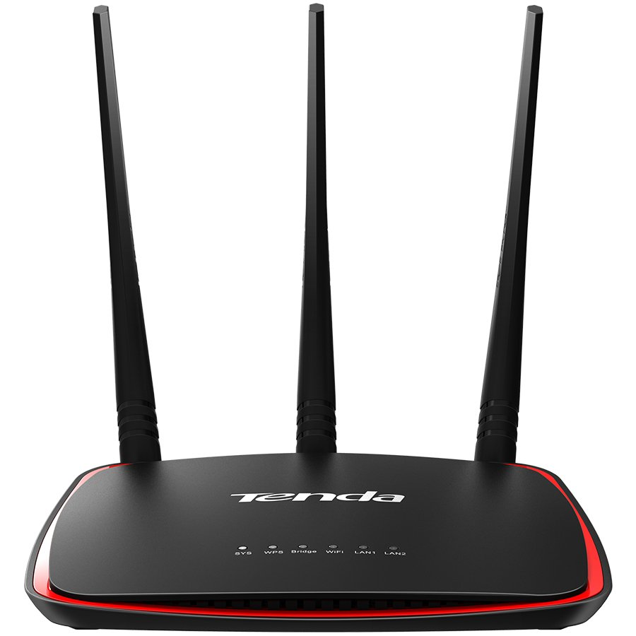

Mobilieji telefonai, išmanieji laikrodžiai, tinklo įranga | Fortakas.lt
 Fortakas 8 700 30 100 Fortakas.Pagalba pagalba@fortakas.lt Susisiekite Verslo skyrius Kontaktai Paslaugos Kompiuterių taisymas Duomenų atkūrimas Kompiuterių valymas Telefonų ir planšečių stikliukų keitimas Bankrutavusių įmonių garantinis servisas Telefonijos sprendimai Draudimas ir pratęsta garantija Informacija Atsiskaitymo būdai Prekių pristatymas Prekių grąžinimas Prekių garantija Rekvizitai PIRKIMO TAISYKLĖS Privatumo taisyklės Tax free Prisijungti Apie mus Kontaktai Paslaugos Informacija Prisijungti Krepšelis tuščias
Fortakas 8 700 30 100 Fortakas.Pagalba pagalba@fortakas.lt Susisiekite Verslo skyrius Kontaktai Paslaugos Kompiuterių taisymas Duomenų atkūrimas Kompiuterių valymas Telefonų ir planšečių stikliukų keitimas Bankrutavusių įmonių garantinis servisas Telefonijos sprendimai Draudimas ir pratęsta garantija Informacija Atsiskaitymo būdai Prekių pristatymas Prekių grąžinimas Prekių garantija Rekvizitai PIRKIMO TAISYKLĖS Privatumo taisyklės Tax free Prisijungti Apie mus Kontaktai Paslaugos Informacija Prisijungti Krepšelis tuščias
Krepšelis
0" prekės prekė (tuščia)Nėra prekių
0,00 € Pristatymas
0,00 € Mokesčiai
0,00 € Viso
Kainos su mokesčiais
Pirkti
Siekiant užtikrinti aukštą teikiamų paslaugų kokybę, fortakas.lt svetainėje yra naudojami slapukai (angl. cookies). Išjungdami šį pranešimą arba toliau naršydami šioje svetainėje sutinkate su fortakas.lt slapukų naudojimo politika. Supratau, uždaryti AKCIJOS Akcija Išpardavimas KOMPIUTERIAI IR KOMPONENTAI Nešiojami kompiuteriai ir priedai Nešiojami kompiuteriai Atnaujinti nešiojami kompiuteriai Krepšiai ir dėklai Nešiojamų kompiuterių dalys Nešiojamų kompiuterių priedai Nešiojamų kompiuterių maitinimo šaltiniai (pakrovėjai) Garantijos išplėtimas Planšetiniai kompiuteriai ir jų priedai Planšetiniai kompiuteriai Planšetinių kompiuterių dėklai Planšetinių kompiuterių laikikliai Pakrovėjai Kiti planšečių priedai Paslaugos Grafinės planšetės Grafinių planšetų priedai Elektroninės skaityklės ir jų priedai Dėklai Kiti priedai Darbinės stotys Komponentai Stacionarūs kompiuteriai Fortako stacionarūs kompiuteriai Firminiai stacionarūs kompiuteriai AIO kompiuteriai Fortako AIO kompiuteriai Firminiai AIO kompiuteriai NUC kompiuteriai Nuc kompiuterių komponentai Fortako NUC kompiuteriai Firminiai NUC kompiuteriai Serveriai Rack tipo tinklinės duomenų saugyklos, NAS Serverių komponentai Kompiuterių komponentai Įvesties/išvesties išplėtimo plokštės Kompiuterių platformos (Barebone) Aušinimo sistemos ir aksesuarai (COOLERS) Vaizdo plokštės Pagrindinės plokštės Vidiniai kietieji diskai SSD Procesoriai Operatyvioji atmintis (RAM) Vidiniai kietieji diskai HDD Optiniai įrenginiai (ODD) Garso plokštės Maitinimo blokai (PSU) Korpusai (CASE) Kortelių skaitytuvai KOMPIUTERIŲ PRIEDAI IR LAIKMENOS Monitoriai Įvesties įrenginiai Klaviatūros Pelės Rinkiniai (klaviatūra ir pelė) Pelių kilimėliai Garso kolonėlės Bevielės kolonėlės Internetinės kameros Ausinės Mikrofonai Išorinės duomenų laikmenos HDD dėklai Išoriniai kietieji diskai Atminties kortelės USB atmintukai Duomenų laikmenos CD, DVD, BD Tinkliniai diskai (NAS) Duomenų saugojimo sistemos ir jų priedai Kompiuterių priedai ir aksesuarai Laikikliai Įrankiai Kita Patogumo prekės Kiti kompiuterių priedai TV tuneriai Papildomos plokštės ir valdikliai USB šviestuvai Kabeliai, adapteriai ir priedai Bluetooth adapteriai Kabeliai, šakotuvai, perėjimai Kiti priedai DVI/VGA/HDMI/DISPLAYPORT kabeliai ir adapteriai Vaizdo, garso kabeliai ir šakotuvai Sata,eSata,SAS maitinimo ir duomenų kabeliai Tinklo kabeliai (UTP,Fibre,Dsl) Programinė įranga Kompiuterių operacinės sistemos Biuro programos Saugumo programinė įranga Grafikos programos PDF redagavimo programos Pagalbinės programos Serverių programinė įranga Kitos programos UPS įrenginiai, baterijos, filtrai ir kiti priedai UPS įrenginiai Maitinimo, viršįtampių filtrai, panelės(PDU), prailgintuvai VRLA/Išorines UPS baterijos ir jų priedai Maitinimo filtrai Prekės valymui, priežiūrai SPAUSDINTUVAI IR BIURO ĮRANGA Spausdintuvai 3D Spausdintuvai Lazeriniai spausdintuvai Rašaliniai spausdintuvai Adatiniai spausdintuvai Etikečių spausdintuvai Termosublimaciniai spausdintuvai Laminatoriai Daugiafunkciniai spausdintuvai Spausdintuvų eksploatacinės medžiagos Spausdinimo serveriai Smulki biuro įranga Skaičiuotuvai Segikliai Įrišimo aparatai Kita Dokumentų kameros Brūkšninių kodų skeneriai Pinigų tikrinimo aparatai Skeneriai Skenerių priedai Dokumentų naikikliai Fakso įrenginiai Braižytuvai Projektoriai ir priedai Projektorių laikikliai Projektoriai Projektorių ekranai Projektorių priedai Projektorių lempos Biuro įrangos priedai Prezentacijų įranga Kanceliarines prekes Biuro įranga VAIZDO, GARSO IR FOTO TECHNIKA Televizoriai ir jų priedai Televizoriai Priedėliai Antenos Nuotolinio valdymo pultai Stovai, laikikliai 3D akiniai Kiti televizorių priedai Optika Teleskopai Mikroskopai Žiūronai Foto įranga ir vaizdo kameros Veidrodiniai DSLR fotoaparatai Sisteminiai CSC fotoaparatai Kompaktiniai DSC fotoaparatai Objektyvai ir priedai Blykstės Vaizdo kameros Konverteriai Skaitmeniniai rėmeliai Dėklai, krepšiai ir aksesuarai Baterijos, įkrovikliai, akumuliatoriai Stovai Priedai Termovizoriai Kintamosios(AC)/Nuolatinės(DC) srovės adapteriai/maitinimo šaltiniai (12) Video ir audio aparatūra Namų kino sistemos Vaizdo grotuvai Medijos grotuvai Patefonai ir priedai Hi-Fi garso sistemos Muzikos centrai, magnetolos Radijo imtuvai Mp3/Mp4 grotuvai ir jų priedai Diktofonai ir jų priedai Automobilinė įranga Automobiliniai įkrovikliai, maitinimo adapteriai, inverteriai Automobilinė audio įranga Registratoriai Laisvų rankų įranga Kiti automobilinės įrangos priedai TELEFONAI, TINKLO ĮRANGA IR GPS Mobilieji telefonai ir jų priedai Mobilieji telefonai Išoriniai akumuliatoriai (power bank) Telefonų priedai Išmanieji laikrodžiai Fiksuoto ryšio telefonai VoIP telefonija VoiP telefonai VoiP telefonų priedai VoIP licencijos VoIP kita įranga Sveikatos stebėjimo įrenginiai Davikliai ir jutikliai Tinklo įranga Kištukai, tinklo jungtys ir apvalkalai Ugniasienės (Firewalls and UTM) Maršrutizatorių platformos Bevieliai maršrutizatoriai Maršrutizatoriai Prieigos taškai Tinklo šakotuvai Tinklo plokštės Belaidės tinklo plokštės Media konverteriai Elektros laidais tinklo įranga Kita tinklo įranga GPS įranga GPS sportui Navigacijos GPS antenos, tracker GPS priedai Stebėjimo ir apsaugos įranga Signalizacijos Namų auklės IP kameros ir jų priedai Analoginės kameros ir jų priedai Vaizdo įrašymo įranga ir serveriai Racijos ŽAIDIMAI IR ŽAIDIMŲ ĮRANGA Žaidimų konsolės Xbox konsolės ir priedai Sony konsolės ir priedai Nintendo konsolės ir priedai Dronai ir jų priedai Dronai Dronų priedai Riedžiai Riedžių priedai Žaidimai Konstruktoriai ir kaladėlės Žaislai PC žaidimai XBOX žaidimai SONY Playstation/PSP/PS Vita žaidimai Nintendo žaidimai Žaidimų kompiuterių priedai Valdikliai Aksesuarai BUITINĖ TECHNIKA Stambi buitinė technika Santechnika Šaldytuvai, šaldikliai Indaplovės Viryklės Džiovyklės Mikrobangų krosnelės Gartraukiai Skalbyklės Įmontuojama buitinė technika Įmontuojamos kaitlentės Įmontuojamos orkaitės Įmontuojami gartraukiai Įmontuojamos indaplovės Įm. mikrobangų krosnelės Įmontuojami šaldytuvai, šaldikliai Įmontuojamos skalbimo mašinos Įmontuojami kavos aparatai Priedai Virtuvės prietaisai Trintuvai Kokteilinės Saldainių ir ledų gaminimo įranga Vandens filtrai Peilių galąstuvai Vakuumatoriai ir priedai Puodai, keptuvės, įrankiai Mini orkaitės Griliai Gruzdintuvai (fritiūrinės) Virduliai Duonkepės Skrudintuvai Mėsmalės Sulčiaspaudės Plakikliai Pjaustyklės Virtuviniai kombainai Sumuštinių keptuvės Garų ir daugiafunkciniai puodai Vaisių džiovintuvai Vaflinės Kita virtuvės technika Kūno priežiūros priemonės Barzdaskutės Plaukų džiovintuvai Kiti veido odos ir grožio prietaisai Epiliatoriai Plaukų formavimo prietaisai Plaukų kirpimo mašinėlės Dantų šepetukai Kita Kavos ruošimo prietaisai Kavos aparatai Kavamalės Pieno plakikliai Kavos aparatų priedai Kava Dulkių siurbliai ir jų priedai Dulkių siurbliai Dulkių siurblių priedai Kita valymo įranga Oro reguliavimo įranga Kondicionieriai Buitiniai ventiliatoriai Radiatoriai Termo ventiliatoriai Meteo stotelės Oro drėkintuvai, sausintuvai Oro valytuvai, jonizatoriai Smulki buitinė technika Siuvimo mašinos Alkotesteriai Lygintuvai ir priedai Svarstyklės Elementai ir krovikliai Sveikatos prekės Laikrodžiai, žadintuvai Kita smulki technika Apšvietimas LED juostos Energiją taupančios lemputės LED maitinimo šaltiniai LED šviestuvai Halogeninės lemputės Kita Lemputės automobiliams LED Lemputės Žibintuvėliai Elektriniai įrankiai Lauko įrankiai Kita Prekių išpardavimas Aktyviam laisvalaikiui Keliautojų įranga Sportui Medžioklės įranga Žuvų ieškikliai (echolotai) ir kiti išmanūs įrenginiai Pradžia TELEFONAI, TINKLO ĮRANGA IR GPS Filtruoti Kategorijos AKCIJOS SPAUSDINTUVAI IR BIURO ĮRANGA VAIZDO, GARSO IR FOTO TECHNIKA KOMPIUTERIŲ PRIEDAI IR LAIKMENOS KOMPIUTERIAI IR KOMPONENTAI TELEFONAI, TINKLO ĮRANGA IR GPS ŽAIDIMAI IR ŽAIDIMŲ ĮRANGA BUITINĖ TECHNIKATELEFONAI, TINKLO ĮRANGA IR GPS
Mobilieji telefonai atrado vietą kiekvieno vartotojo kišenėje ir užima didelę svarbą visų mūsų technologiniame gyvenime. Nesvarbu, ar naudojamasi paprastu mobiliuoju telefonu, ar naujos kartos išmaniuoju – telefonai gerokai palengvina mūsų gyvenimą. Technologijų dėka, artimojo skambučio nebereikia laukti pusę dienos sėdint prie telefono, o į kelionę automobiliu vykti pasikliaunant vien tik žemėlapiu. Telefonai, tinklo įranga ir GPS technologijos tapo nepamainomi kone kiekviename žingsnyje. Fortako asortimente rasite tinklo įrangą, mobiliuosius telefonus ir jų priedus, GPS įrangą, stebėjimo ir apsaugos įrangą, racijas, išmaniuosius laikrodžius, fiksuoto ryšio telefonus, VoIP telefoniją bei sveikatos stebėjimų įrenginius. Mūsų klientų patogumui visus reikalingus įrenginius galima įsigyti Fortako internetinėje parduotuvėje!
Tinklo įranga
Mobilieji telefonai ir jų priedai
GPS įranga
Stebėjimo ir apsaugos įranga
Racijos
Išmanieji laikrodžiai
Fiksuoto ryšio telefonai
VoIP telefonija
Sveikatos stebėjimo įrenginiai
Davikliai ir jutikliai
Telefonai, tinklo įranga ir GPS
Telefonai, tinklo įranga ir GPS yra naudojami kiekvienuose namuose. Tinklo įranga reikalinga visiems, kurie namuose ar biure turi internetą bei du ir daugiau kompiuterius. Į tinklo įrangos kategoriją įeina tinklo plokštės, belaidės tinklo plokštės, paprastieji ir bevieliai maršrutizatoriai , tinklo šakotuvai ir kiti įrenginiai. Rodos, yra įprasta, kad nusipirkus nešiojamąjį kompiuterį, jo prijungimas prie bevielio interneto užtrunka vos keletą sekundžių. Tačiau taip yra dėl to, kad nauji nešiojamieji kompiuteriai gaminami su tinklo plokštėmis, pritaikytomis belaidžiam ryšiui ir turi integruotus wifi imtuvus. Tačiau norint prijungti prie interneto ar kompiuterių tinklo stacionarų kompiuterį, reikės apsirūpinti papildoma įranga. Interneto tiekėjai iki būsto ar biuro atveda tiesiog kabelį. Norint naudotis bevieliu internetu, reiks įsigyti ir bevielį maršrutizatorių. Taip pat visą įrangą, nepriklausomai nuo to, ar tai yra telefonai, tinklo įranga ar GPS įranga , ar tam tikri kompiuterių komponentai, derėtų retkarčiais atnaujinti. Tarkime, interneto tiekėjams naudojantis vis naujomis technologijomis ir siekiant klientus prisitraukti siūlant kuo greitesnį internetą, jie didina interneto greitį. Tačiau interneto greitis priklauso ne tik nuo tiekėjo, tačiau ir nuo turimos įrangos, t.y. maršrutizatoriaus. Senos kartos įrenginiai palaiko ribotą duomenų perdavimo greitį, tad gali tekti apsirūpinti nauja tinklo įranga.
Pastaraisiais metais vis didesnio susidomėjimo susilaukia naujausias išmanusis įrenginys, tai yra – išmanieji laikrodžiai. Šie nedideli, tačiau itin funkcionalūs prietaisai, palengvina kiekvieno naudotojo gyvenimą. Tiesa, priklausomai nuo išmaniajam laikrodžiui įsigyti skiriamo biudžeto, skirsis ir jo funkcijos. Kai kurie išmanieji laikrodžiai veiks kaip laikrodis, žadintuvas, kalendorius, žingsniamatis ar širdies pulso matavimo aparatas, tuo tarpu naujausieji ir brangesni modeliai leis ne tik peržiūrėti elektroninio pašto ar socialinių tinklų pranešimus, tačiau bluetooth pagalba klausytis muzikos ar netgi paskambinti. Įdomu tai, kad išmaniuosius laikrodžius susinchronizavus su mobiliuoju telefonu, jie gauna visą pagrindinę reikiamą informaciją – telefoną galima tiesiog palikti namuose. Tai yra itin patogus išradimas tiems, kurie vietoje pastovaus naršymo mobiliajame telefone, galėtų daugiau laiko skirti kitiems užsiėmimams. Tačiau verta prisiminti, kad išmanieji laikrodžiai kaip ir mobilieji telefonai , tinklo įranga ir GPS, yra nuolat kintanti technologija. Kas yra patogu ir patrauklu šiandien, rytoj gali būti jau „vakarykštės naujienos“. Taigi renkantis laikrodį, kaip ir kiekvieną kitą išmanųjį įrenginį, reikėtų įsigyti tokį, kuris tenkintų visus poreikius ir lūkesčius nuo pat pirmosios naudojimo dienos.
Jei jūsų namams ar biurui reikalingi telefonai, tinklo įranga ir GPS – kreipkitės į Fortaką. Tiek mūsų prekybos salonuose, tiek ir internetinėje parduotuvėje, rasite platų šios kategorijos prekių pasirinkimą geriausiomis kainomis. O kvalifikuoti, ilgametę patirtį turintys darbuotojai noriai jus pakonsultuos ir padės išsirinkti labiausiai jūsų poreikius, lūkesčius ir biudžetą atitinkančią prekę. Nieko nelaukite ir atnaujinkite savo turimą įrangą jau dabar!
Užsisakykite naujienlaiškį ir gaukite geriausius pasiūlymus!
Kategorijos AKCIJOS SPAUSDINTUVAI IR BIURO ĮRANGA VAIZDO, GARSO IR FOTO TECHNIKA KOMPIUTERIŲ PRIEDAI IR LAIKMENOS KOMPIUTERIAI IR KOMPONENTAI TELEFONAI, TINKLO ĮRANGA IR GPS ŽAIDIMAI IR ŽAIDIMŲ ĮRANGA BUITINĖ TECHNIKA Mūsų parduotuvės Kaunas Paslaugos Kompiuterių taisymas Duomenų atkūrimas - atstatymas iš kietųjų diskų Kompiuterių valymas nuo dulkių ir nešvarumų Informacija Atsiskaitymo būdai Prekių pristatymas Prekių grąžinimas Prekių garantija Pirkimo taisyklės Rekvizitai Privatumo taisyklės Verslo skyrius Partnerystė Naujienos pirkimo taisyklės Pirkimo taisyklės Blogas Naujausios vaizdo plokštės Elektrinės barzdaskutės: kokią geriausiai rinktis? Ateityje telefonus valdysime akimis, balsu ar mintimis? Telefonų priedai, išplečiantys ribas Išmanieji telefonai su NFC 8 700 30 100 UAB „Medialandas“ Savanorių pr. 214, Kaunas Įm.kodas: 301767562 PVM kodas: LT100008235315 Atsiskaitomoji sąskaita: Swedbank‘as - LT377300010130566822